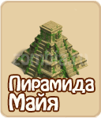

Получено: файл; исходный URL. Первая иллюстрация строки каталога; авторство не подтверждено. Идентичность изображения при замене домена не проверена. Страница: источник.

Пирамида Майа
браузерная версия; платформа и дата редакции не установлены- Тип
- Постройка
- Версия и дата
- браузерная версия; платформа и дата редакции не установлены
Данные по источнику · браузерная версия; платформа не установлена · дата редакции списка не установлена
Предварительно: Прочитан список. Имена файлов пиктограмм приводятся как есть: они не гарантируют идентификацию материала. Alt-атрибуты источника содержат ошибки. Отдельная статья и дата не проверены.. Требуется сверка.
- Сведения из списка, включая имена файлов пиктограмм
- [рисунок: pyramida_maya.png] Опыт: 2000 (500+ 500+500+500) Стадии строительства: 1. 150 [рисунок: Kamni.png] +50 [рисунок: Brevna_pal-my.jpg] +100 [рисунок: Sekvoya.jpg] 2. 200 [рисунок: Kamni.png] +50 [рисунок: chernij_mramor.png] +005 [рисунок: Kvarc.png] 3. 100 [рисунок: Bloki.png] +80 [рисунок: belyj-mramor.png] +001 [рисунок: gold.jpg] 4.150 [рисунок: Bloki.png] +05 [рисунок: Ogon.jpg] +030 [рисунок: mir.png] Превращает зомби в человека Стать человеком = 1 Зомбиум + 99 Мир
Данные по источнику · историческая браузерная игра, площадка не указана · 05.05.2012 — дата публикации; дата редакции неизвестна
Предварительно: Сопоставлено по единственному точному названию; различные версии или одноимённые объекты могут различаться. Названия файлов и alt пиктограмм сохранены как подписи, не заменяют проверенную расшифровку; изображения и цены требуют ручной сверки. Независимость от zombi-ferma.ru и других сайтов не установлена.. Требуется сверка.
- Текст и пиктограммы источника
- [изображение: m_maya.png] Стадии строительства: 1. 150 [изображение: Камни; Kamni.png] +50 [изображение: Брёвна пальмы; Brevna_palmy.png] +100 [изображение: Секвойя; sekvoya.png] 2. 200 [изображение: Камни; Kamni.png] +50 [изображение: Чёрный мрамор; chernij_mramor.png] +005 [изображение: Кварц; Kvarc.png] 3. 100 [изображение: Блоки; Bloki.png] +80 [изображение: Белый мрамор; belyj-mramor.png] +001 [изображение: Монета; gold.jpg] 4.150 [изображение: Блоки; Bloki.png] +05 [изображение: Огонь; Ogon.png] +030 [изображение: Мир; mir.png] Превращает зомби в человека Стать человеком = 1 Зомбиум + 99 Ми р
Связанные сущности
нет проверенных связей — требуется сверка.